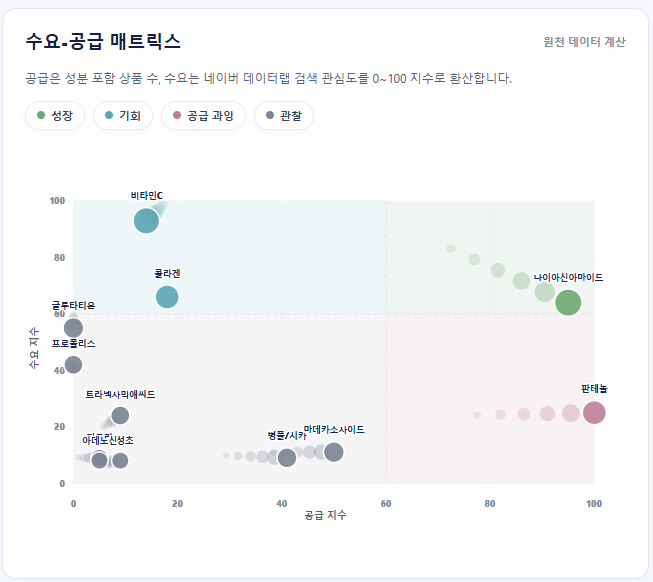
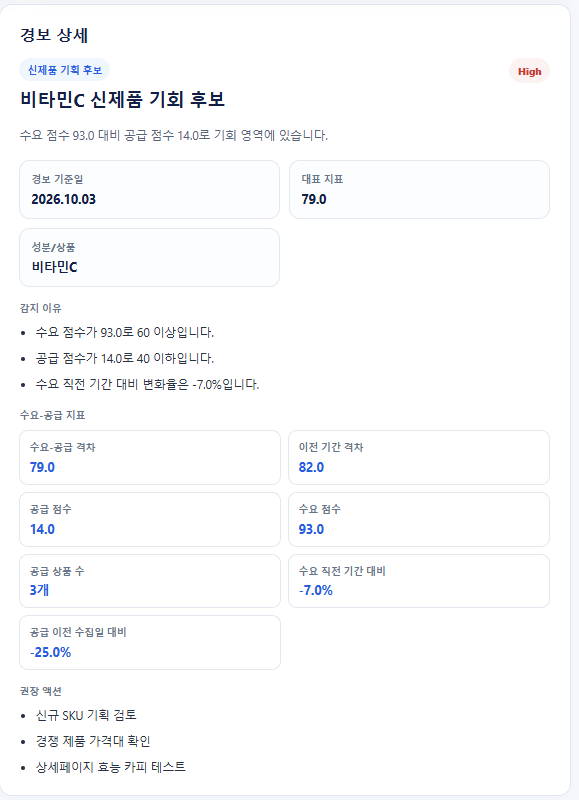
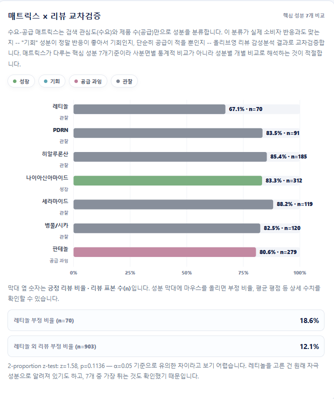
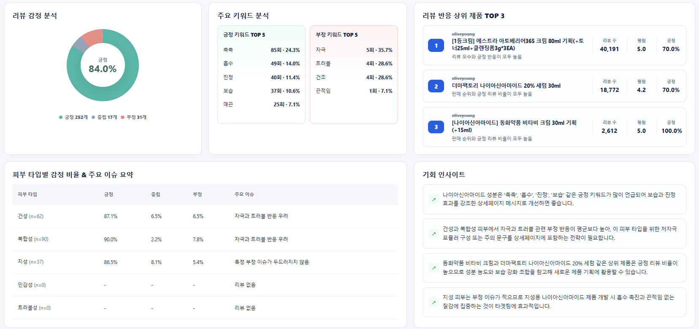
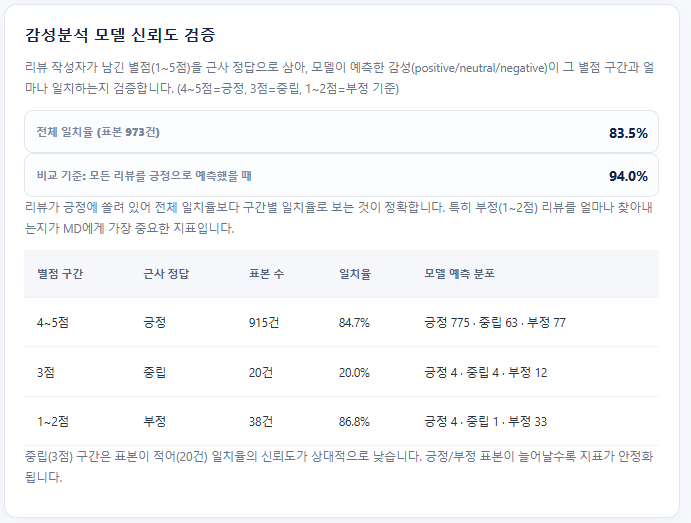
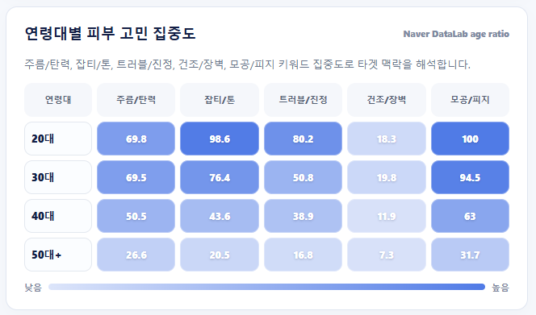

검색 수요 × 시장 공급 × 소비자 리뷰를 교차 분석해 화장품 MD의 성분 기획을 돕는 대시보드
화장품 MD(상품기획자)는 신제품을 기획할 때 검색 수요, 시장 공급, 소비자 반응을 각각 다른 곳에서 따로 확인해야 합니다. 이 세 가지 데이터를 성분 단위로 묶어 한 화면에서 비교하면, "지금 어떤 성분으로 제품을 만들어야 하는가"를 더 빠르게 판단할 수 있다고 보고 다음 세 가지 질문에서 출발했습니다.
| 데이터 | 출처 · 수집 방식 | 규모 |
|---|---|---|
| 상품 정보 | 올리브영 스킨케어 2개 카테고리(크림, 에센스/세럼/앰플)의 판매순·신상품순 상위 24개 상품을 Selenium으로 5일간(9/11~9/15) 매일 수집 | 고유 상품 107개 |
| 소비자 리뷰 | 위 상품의 리뷰를 상품당 최대 10건 수집. 짧은 시간에 요청이 몰리면 접속이 차단되어, 요청 간격을 두고 여러 차례 나눠 재수집 | 101개 상품, 973건 |
| 검색 수요 | 네이버 DataLab 검색어 트렌드 API. 성분별로 검색어 그룹(예: 비타민C·비타씨·비타C)을 묶어 조회 | 성분별 주간 · 월간 검색 지수 |
| 지표 · 방법 | 정의 |
|---|---|
| 수요 점수 | 네이버 DataLab 성분별 검색량. 한 번에 5개 그룹까지만 조회되고 값이 요청마다 상대값이라, 매 요청에 기준 검색어(세럼·앰플·에센스 추천)를 함께 넣어 그 비율로 보정. 공급과 같은 기간(9/11~9/15)의 일별 평균을 쓰고, 직전 5일까지 포함한 최댓값을 100으로 환산 (1위 성분도 100 미만일 수 있음) |
| 공급 점수 | 마지막 수집일(9/15) 기준 성분별 올리브영 상위 노출 상품 수 ÷ 상품이 가장 많은 성분의 상품 수 × 100 (성분은 과반 기준 정제본으로 집계) |
| 4분면 분류 | 두 점수를 60점 기준으로 나눠 기회(수요↑ 공급↓) · 성장(수요↑ 공급↑) · 공급과잉(수요↓ 공급↑) · 관찰(수요↓ 공급↓)으로 분류. 기준값에 따라 결과가 바뀌는지 50·70점으로도 확인 |
| 리뷰 감성분석 | 네이버 영화 리뷰(NSMC)로 학습된 한국어 모델 KoELECTRA(긍정·부정 2분류)를 사용하고, 두 확률이 모두 0.65 미만인 애매한 리뷰는 중립으로 처리해 3분류로 확장 |
| 모델 검증 | 별도 정답 데이터가 없어 리뷰 별점을 근사 정답으로 사용(4~5점 긍정, 3점 중립, 1~2점 부정)하고, 감성별 재현율로 평가 |
| 성분 간 비교 | 특정 성분의 부정 리뷰 비율이 나머지 리뷰보다 높은지 2-비율 z-검정(유의수준 5%)으로 확인. 한 상품에 여러 성분이 들어 있어 같은 리뷰가 중복으로 세어지지 않도록, 비교 그룹은 해당 성분 리뷰를 뺀 나머지 리뷰로 구성 |
처음 매트릭스를 봤을 때는 수요와 공급의 기간이 서로 달랐습니다. 공급은 9월 11~15일에 수집한 상품 데이터인데, 수요는 대시보드를 연 날의 검색량을 쓰고 있었습니다. 그래서 수요도 같은 기간으로 맞추고, 성분 데이터를 정제한 뒤 다시 계산했습니다.
비타민C는 수요 93점, 공급 14점으로 기회 영역에 들어갔고, 4분면 기준을 60점에서 50점이나 70점으로 바꿔도 결과는 같았습니다. 9월 15일 기준 올리브영 상위에 노출된 비타민C 제품은 3개였는데, 셋 다 한 브랜드의 시즌 기획 상품이었습니다. 찾는 사람은 많은데 고를 수 있는 제품이 적고, 그마저 한 브랜드에 몰려 있어서 신제품 후보로 먼저 검토해 볼 만한 성분이라고 봤습니다.
콜라겐(수요 66점, 공급 18점)도 기회 영역에 들어갔지만, 기준을 70점으로 올리면 빠져서 결론에는 넣지 않았습니다. 비타민C 유도체 이름으로만 표기된 제품 1개는 아직 동의어 처리를 하지 않아 집계에서 빠져 있습니다.
레티놀은 자극이 있다는 인식이 있어서 부정 리뷰가 많을 거라고 예상했습니다. 실제로 부정 비율은 18.6%(70건 중 13건)로 다른 리뷰(12.1%)보다 높았지만, z-검정 결과 p값이 0.11이라 유의한 차이는 아니었습니다. 평균 별점도 4.84점으로 낮지 않았습니다.
부정으로 분류된 13건을 직접 읽어 보니 자극이나 효과에 대한 불만은 3건뿐이었습니다. 나머지는 "레티놀 1000IU는 0.03% 함유라는 뜻이에요" 같은 성분 설명이나 사용법 리뷰였는데, 모델이 이런 글을 부정으로 잘못 분류하고 있었습니다. 그래서 자극 이슈가 있다고 결론 내리지 않았고, 감성분석 모델부터 개선해야 한다고 정리했습니다.
리뷰의 94%가 별점 4~5점이라, 모든 리뷰를 긍정이라고만 답해도 정확도는 94%가 나옵니다. 그래서 정확도 대신 긍정·중립·부정을 각각 얼마나 잘 찾아내는지(재현율)를 따로 봤습니다.
대시보드의 상품 수가 원본 CSV와 맞지 않아서 원인을 찾아봤습니다. 주성분은 상세페이지 이미지를 GPT로 읽어 매일 새로 뽑는데, 2일 이상 수집된 상품 87개 중 82개는 날마다 결과가 달랐습니다. 세라마이드가 주성분인 앰플이 어떤 날에는 비타민C 제품으로 잡히는 식이었습니다. DB는 매일 결과를 덮어쓰지 않고 쌓기만 해서, 한 번이라도 잘못 읽힌 성분이 그대로 남아 있었습니다.
원본은 그대로 두고, 5일 중 절반 넘게 나온 성분만 인정하는 정제 테이블을 따로 만들어 매트릭스와 경보가 이 테이블을 읽게 바꿨습니다. 나이아신아마이드 제품 수는 43개에서 27개로, 전체 성분 행은 520개에서 217개로 줄었습니다. 그 과정에서 정식 수집 전에 테스트로 넣었던 상품 8개도 찾아 지웠습니다.






정식 출품명: 화장품 성분 트렌드 라이프사이클 및 시장 반영 분석 기반 MD 의사결정 자동화 시스템
표본 규모: 크림과 에센스/세럼/앰플 2개 카테고리에서 상품 107개, 리뷰 973건을 모아 규모가 작습니다. 특히 레티놀은 7개 상품에서 10건씩 모은 70건이라, 상품 하나의 특성이 결과를 크게 좌우할 수 있습니다. 심사에서 받은 "데이터가 더 많았으면 좋겠다"는 피드백도 같은 지점입니다.
감성분석 모델: 따로 정답을 붙인 데이터가 없어서 별점을 정답 대신 썼는데, 5점을 주고도 아쉬운 점을 적은 리뷰처럼 별점과 글 내용이 항상 맞지는 않습니다. 또 사용한 모델은 네이버 영화 리뷰(NSMC)로 긍정·부정을 배운 모델이라, 성분 함량을 설명하거나 사용법을 알려 주는 화장품 리뷰를 부정으로 잘못 분류하는 경우가 있었습니다.
성분 데이터: GPT로 뽑은 주성분을 과반 기준으로 정제했지만, 하루만 수집된 상품은 그날의 추출 결과를 그대로 쓸 수밖에 없습니다. 같은 성분이 여러 이름으로 표기되는 경우(예: 히알루론산 · 소듐하이알루로네이트, 비타민C · 3-O-에틸아스코빅애씨드)도 하나로 묶지 못해 일부 제품이 집계에서 빠집니다.
지표 해석: 공급 점수는 올리브영 상위 노출 상품 기준이라 전체 시장의 공급과 같지 않고, 검색 지수도 성분 간 상대값입니다. 수집 기간이 5일이라 결과는 그 기간의 신호로만 봐야 합니다. 4분면 기준 60점도 근거를 두고 정한 값이 아니라서, 50점과 70점으로 바꿔 보고 결과가 달라지는 성분(콜라겐)은 결론에서 뺐습니다.
운영 환경: 감성분석 서버를 무료 서버(RAM 512MB)에 올려서, 처음 쓰던 다국어 BERT-base(약 1억 1천만 파라미터) 대신 한국어 경량 모델(약 1,400만 파라미터)로 바꿨습니다. 또 무료 서버는 15분 동안 접속이 없으면 잠들기 때문에, 첫 접속 때 서버가 깨어나는 데 30~60초가 걸릴 수 있습니다.